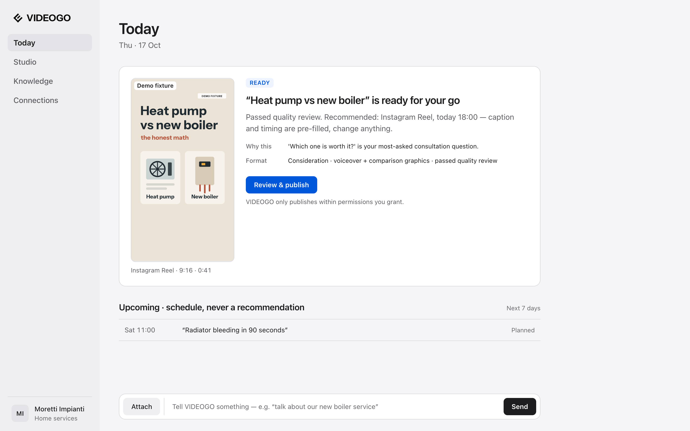
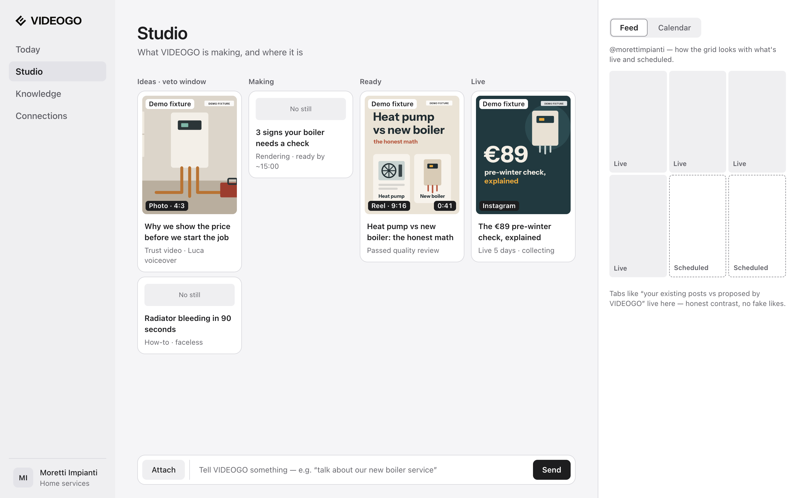
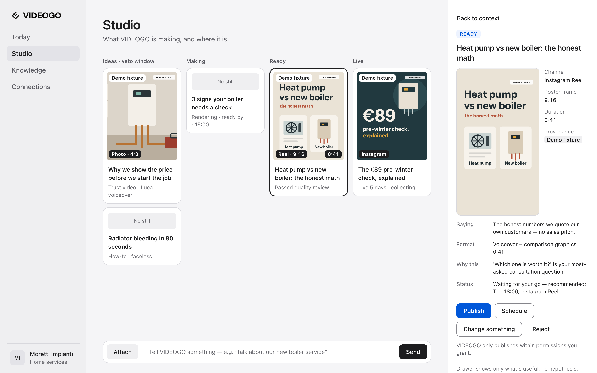
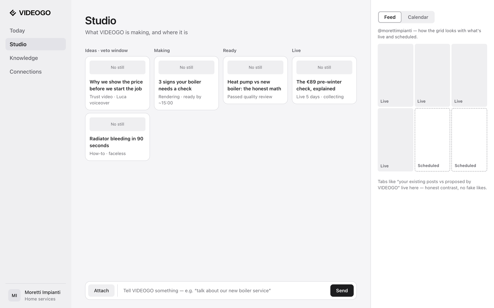
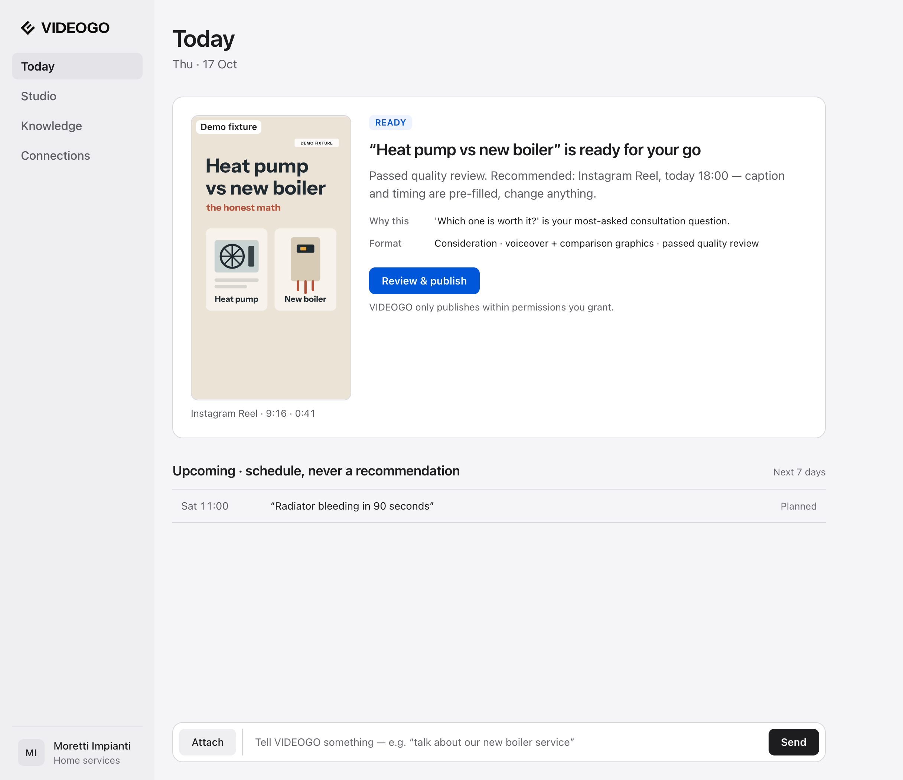
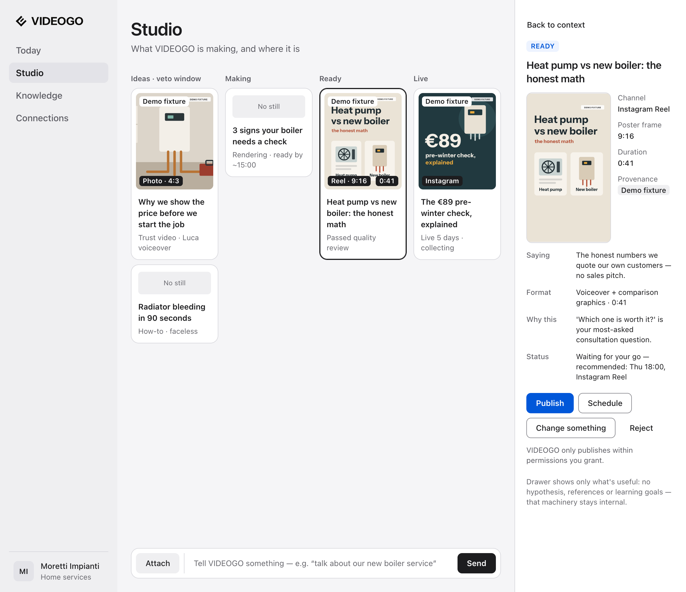
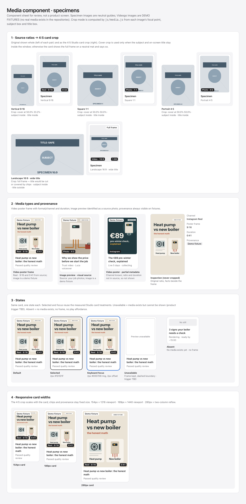

Status: not approvedVideogo · Checkpoint A2 · Media
Media as a primary component family. Typography held at the v0.1 baseline (system-ui, page title 32/38) so media is the only variable. Rendered in Google Chrome, macOS, device scale 2. No option is recommended on this board.
DEMO FIXTURES. No real Videogo output or customer media exists in the repositories. Every poster frame and photo on this board is an illustrative demo fixture, marked “Demo fixture” in the interface, burned into the image, and flagged fixture: true in src/js/media-fixtures.js. None of it is customer evidence. Specimen images are neutral guides.
A2-1 · Today · READY with media · 1440

A2-2 · Studio · populated media board · 1440

A2-3 · Selected media detail · 1440

A2-4 · Honest media-absent fallback · 1440

A2-6 · Today · READY with media · 1216

A2-7 · Selected media detail · 1216

A2-5 · Media component specimens
